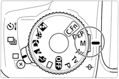

Connecting DSLRs
StellarMate supports DSLR cameras using the INDI GPhoto driver based on libgphto2 library. It includes supports for Canon, Nikon, Sony, Pentax and other DSLR cameras. To know if your specific model is supported, please check the DSLR Supported Cameras List. In order to use your camera with StellarMate, it must meet the following requirements:
- It must support USB. Connect a USB cable from the camera to StellarMate. WiFI cameras are not supported yet.
- It must support BULB/MANUAL mode where the shutter is controlled by an external program.

Tip: Some modern cameras do not have a Bulb (B) dial. You can set Bulb Mode by selecting Manual (M) dial and then change the exposure duration until you see BULB in the camera.
|
Tip |
|
|
|
Some modern cameras do not have a Bulb (B) dial. You can set Bulb Mode by selecting Manual (M) dial and then change the exposure duration until you see BULB in the camera. |
The shutter control can be either executed internally if supported by the camera, or externally via an external release cable (e.g. DSUSB). The INDI GPhoto driver documentation includes all the details on operating DSLR cameras.
The INDI driver requires the camera resolution and pixel size upon first connection. When the camera is first detected, StellarMate would look up the camera specifications and fill out the necessary information automatically. Please make sure this information is correct in the INDI Control Panel → Image Info Tab.
|
Tip |
|
|
|
Pentax cameras are supported in INDI GPhoto driver and also in INDI Native Pentax driver. The native driver is experimental but offers more support to Pentax cameras. It’s recommended to try both drivers to see which is more fit for your specific camera model. |
Captured images are downloaded to StellarMate, and depending on the sensor size and the quality of the WiFi connection, it can take a few seconds for large frames to transfer. Live view video streaming is available on most models to aid in focusing the camera. Selected Canon cameras support focusing operations and can autofocus using the Ekos Focus module. Manual focus is available via Live View or Bahtinov Mask Assistant Tool.